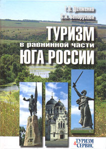

Туризм в равнинной части Юга России. Ростовская, Волгоградская, Астраханская области (ресурсы, история, тенденции). М.: ИКЦ «МарТ»; Ростов н/Д: Издательский центр «МарТ», 2008. - 208 с. (Соавтор - С.А. Белорусова).

Аннотация
В книге дан всесторонний анализ ресурсов и условий развития туризма, а также особенностей туристской деятельности в северных равнинных областях Юга России. Исследования ведутся на фоне более чем вековой истории туризма в России. Рекомендуется кооперация областей при создании конкурентноспособного туристского продукта на российском и мировом рынках. Монография адресована сотрудникам туристских фирм, преподавателям вузов, студентам, обучающимся туристским специальностям, а также всем интересующимся проблемами туризма.
Оглавление
| К читателю | 4 |
Введение |
7 |
1. РОССИЙСКИЙ ТУРИЗМ – СОВОКУПНОСТЬ РЕГИОНАЛЬНОГО ТУРИЗМА |
10 |
| 1.1. Анализ ценностных свойств туристских ресурсов России | 11 |
| 1.2. География и статистика российского туризма | 22 |
2. ПРИРОДНЫЕ УСЛОВИЯ И РЕСУРСЫ РАЗВИТИЯ ТУРИЗМА В РАВНИННЫХ ОБЛАСТЯХ ЮГА РОССИИ |
35 |
| 2.2. Рекреационные исследования равнинной части Юга России | 36 |
| 2.3. Природа равнинной части Юга России как условие туристской деятельности | 43 |
3. ИСТОРИКО-КУЛЬТУРНЫЕ РЕСУРСЫ ТУРИЗМА РАВНИННОЙ ЧАСТИ ЮГА РОССИИ |
76 |
| 3.1. История и характеристика достопримечательностей | 77 |
| 3.2. Экскурсионные объекты, определяющие въездной туристский поток | 81 |
| 3.3. Музеи и география экскурсионных маршрутов | 84 |
4. СОЦИАЛЬНО-ЭКОНОМИЧЕСКИЕ УСЛОВИЯ РАЗВИТИЯ ТУРИЗМА |
88 |
| 4.1. Гостиничное хозяйство и аналогичные средства размещения туристов | 89 |
| 4.2. Транспортное обеспечение туризма | 91 |
| 4.3. Уровень благосостояния граждан и туризм | 95 |
5. ТУРИСТСКАЯ ДЕЯТЕЛЬНОСТЬ. XIX – XX ВЕКА |
100 |
| 5.1. Нижний Дон как транзитная территория для направляющихся на воды | 101 |
| 5.2. Деятельность Российского комитета РОТ и учебных заведений | 104 |
| 5.3. Общество пролетарского туризма и экскурсий | 109 |
| 5.4. Туристско-экскурсионное управление ВЦСПС – Центральный совет по туризму и экскурсиям ВЦСПС | 114 |
| 5.5. Спортивный туризм | 119 |
| 5.6. Роль Ростовского государственного университета в развитии образовательных программ по туризму в высшей школе | 127 |
| 5.7. Первые туристские кооперативы | 131 |
6. РЕАЛИИ И ПЕРСПЕКТИВЫ. НАЧАЛО XXI ВЕКА |
133 |
| 6.1. Общая характеристика состояния туризма в Ростовской, Волгоградской и Астраханской областях | 133 |
| 6.2. Санаторно-курортное лечение и туризм | 147 |
ЗАКЛЮЧЕНИЕ |
161 |
ЛИТЕРАТУРА(140 наименований) |
168 |
| Приложение Туристская лоция реки Дон (от г. Богучар до Азовского моря) Масштаб: в 1 см 1 км | 177 |